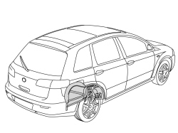
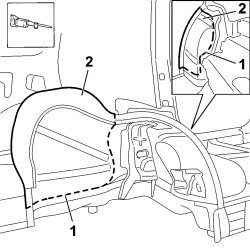
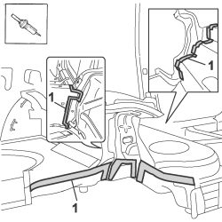
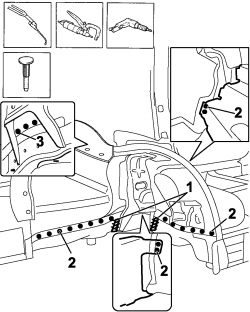
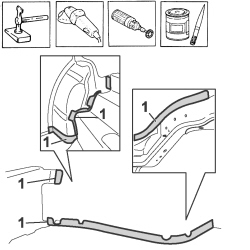
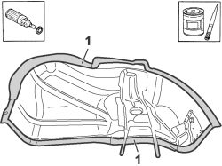
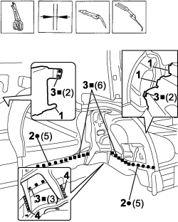
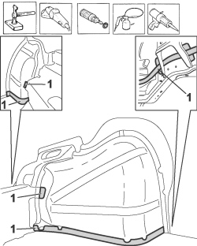

7210B40 R.R. REAR INNER WHEEL ARCH
- Path
- Procedures > 72 PANELS AND FRAMES > 7210 REMOVING-REFITTING > 7210B STRUCTURAL ELEMENTS (CENTRE AND REAR SECTION) > 7210B40 R.R. REAR INNER WHEEL ARCH
- Kind
- repair procedure (removal / refitting; the operation number is the code)
- Applies to
- all engines; all production periods
- Interactive page
- https://sloeber94.github.io/elrnDB-fCrm/en/#/194001227
Applies to: all engines; all production periods
 Removing
Removing
 Refitting
RefittingOp. 7210B45 R.R. REAR WING FRAME
Op. 7210B50 R.R. REAR WING LOWER FRAME
Op. 7210B75 R.R. REAR LIGHT CLUSTER HOUSING

Applies to: all engines; all production periods
- Check that the components connected are not distorted by checking the bodyshell alignment measurements using suitable equipment (gauges, templates or jigs).
- Straighten the body as necessary.
1. Use a hack sawing machine following the cutting lines shown in the diagram.
2. Remove the cut parts from the wheel arch.

Applies to: all engines; all production periods
1. Use a hot air blower and wire brush to remove the protection.

Applies to: all engines; all production periods
1. Use an oxyacetylene torch and a wire brush to unsolder the brazing shown in the diagram.
2. Use the chamfering machine to remove the spot welds shown in the diagram.
3. Use the drill and chamfer the spot welds not accessible with the chamfering machine.
- Use the hammer and chisel and remove the spot welds chamfered previously.
- Remove the offcuts from the vehicle.

Applies to: all engines; all production periods
- Straighten the edges of the vehicle using a hammer and dolly block.
- Remove the spot weld residues using a disc grinder.
- Use a rotary brush to clean the areas treated previously.
1. Apply electro-galvanizing paint.

Applies to: all engines; all production periods
- Remove the anti-corrosion treatment from the entire perimeter of the inner and outer parts using the rotary brush.
1. Apply electro-weldable paint to the edges treated previously.

Applies to: all engines; all production periods
Refitting
Removing1. Apply sealant to the edges of the join between the crossmember under the seat and the wheel arch.
- Position the inner wheel arch correctly on the vehicle and secure it using self-locking clamps.
- Check that the alignment is perfect.
2. Use a spot welder in the areas shown in the diagram.
3. Use a MIG welder and weld the openings made previously in the replacement part.
4. Use the oxyacetylene torch to braze at the points shown in the diagram.

Applies to: all engines; all production periods
- Correct any distortions to the panel using a hammer and dolly block.
- Use a disc grinder to level and remove the welding.
- Use a rotary brush to clean the areas welded previously.
1. Apply anti-oxidant protection to the areas involved in the welding.
- Seal the join lines between the replacement part and the vehicle.
- Renew the underbody protection.

Applies to: all engines; all production periods
Op. 7210B75 R.R. REAR LIGHT CLUSTER HOUSING
Op. 7210B50 R.R. REAR WING LOWER FRAME